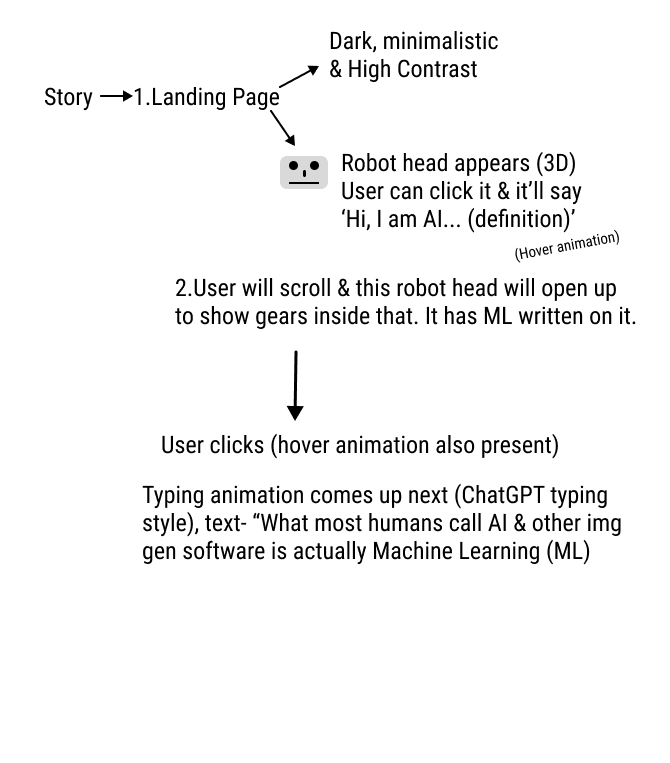
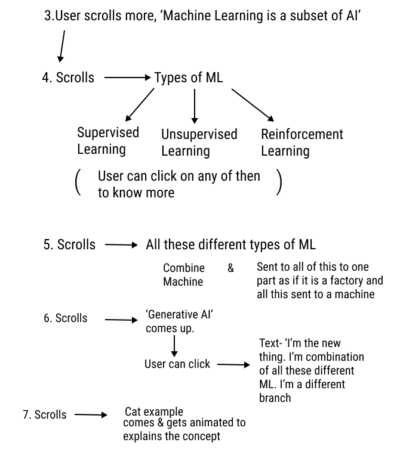
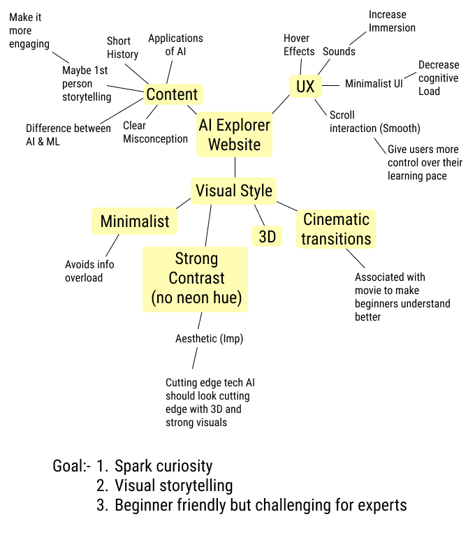
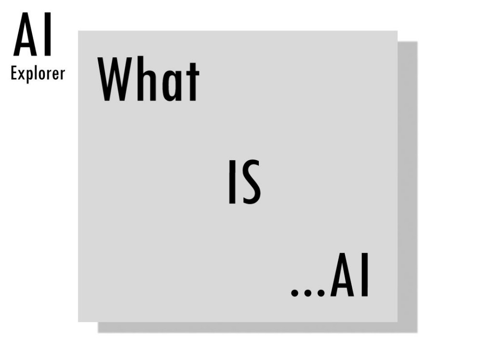
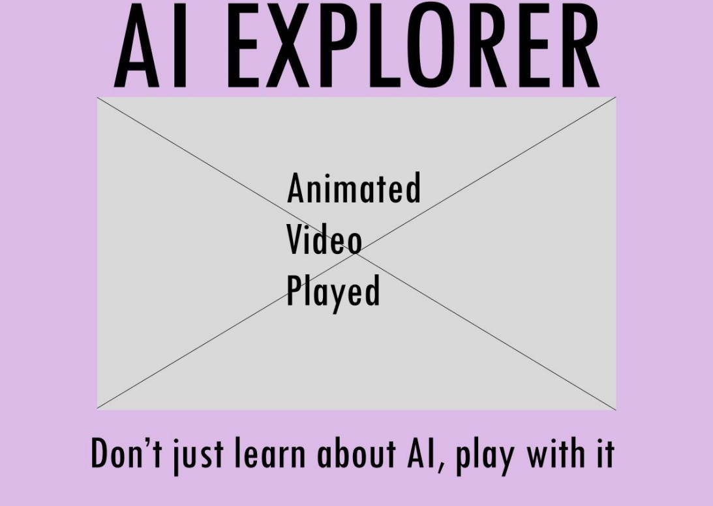

Ideation
Planning the storytelling and content



Wireframe concepts
1. Dark and High Contrast Aesthetic

This layout can create emphasis on main elements due to high contrast, thus improving user engagement
2. Ultra Minimalistic, High Impact Design

This layout reduces cognitive load immensely, users will be able to focus only on information at hand
3. Dreamy, friendly like Website

This layout emphasizes experimentation and play, can be helpful for younger audience
Final decided layout
Dark and High Contrast Aesthetic: Reason why I picked this was because it focuses on engagement through stunning visuals and high contrast lightings while also targetting to reduce cognitive load because emphasis by contrast. Ultra minimlaist seems like an overly restrained/minimal presentation which can reduce engagement for this particular audience/content like that IBM AI website I saw Users will learn better if the material is engaging. Dreamy layout poses challenge such as discarding a type of audience who might appreciate a more traditional website that features text. Hence, Dark and High Contrast seems like a perfect middle ground for all of these concerns.